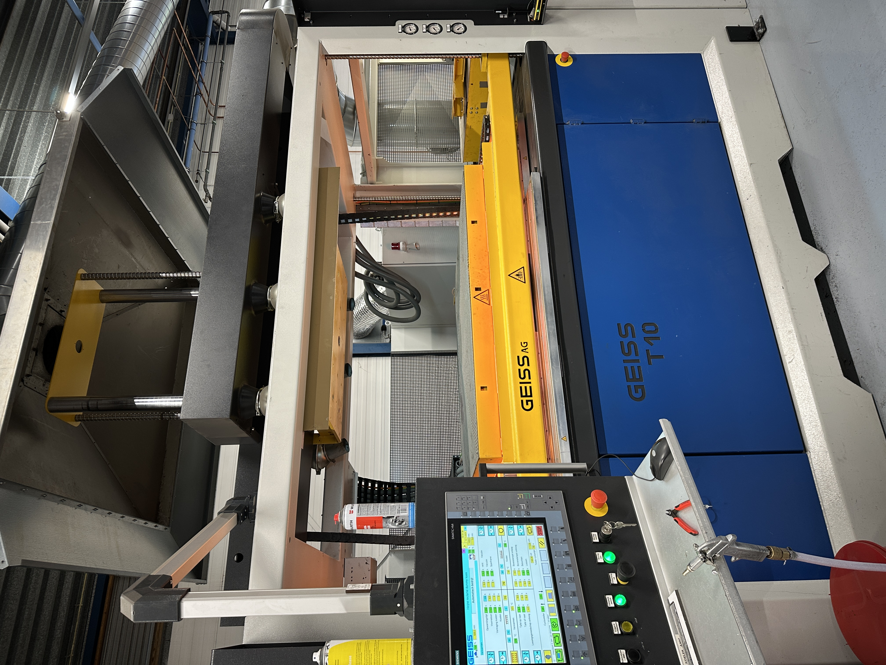
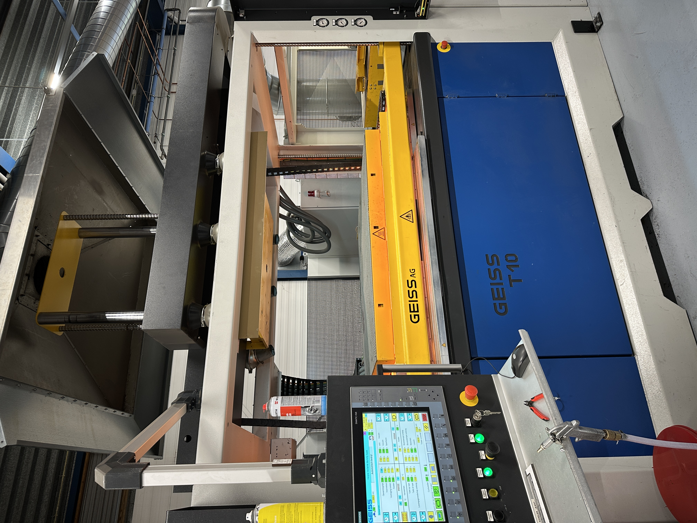

Ontwikkeldoel 1: Verbreding van technische kennis
3D-printen en productietechnieken
In de minor Smart Technology hebben we stap voor stap geleerd hoe je een 3D-model maakt en print. Zo ontwierpen we onder andere een behuizing voor onze IoT-oplossing en hebben we die vervolgens zelf geprint. Door dit proces kreeg ik niet alleen de software onder de knie, maar leerde ik ook over zaken als materiaalkeuze en het juist instellen van de printer. Ik vond het vooral leerzaam om te zien hoe elk detail invloed heeft op het eindresultaat, van het correct slicen van het model tot het nabewerken van het geprinte object. Daarnaast hebben we een bezoek gebracht aan Your Plastic Solutions. Tijdens deze rondleiding werd duidelijk hoe verschillende productietechnieken (zoals 3D-printen, spuitgieten en vacuumvormen) worden ingezet. Ik merkte dat het kiezen van de juiste methode afhangt van de gewenste hoeveelheid, vorm en kwaliteit. Zo is 3D-printen geschikt voor snelle prototyping of kleine series, terwijl spuitgieten juist handig is voor grote productieaantallen. Door deze ervaring kreeg ik een beter beeld van hoe een product van ontwerp tot eindproduct kan gaan en welke stappen daarbij komen kijken. Deze praktijkvoorbeelden helpen me om mijn technische kennis te verbreden. Ik zie nu beter wat er allemaal bij een product komt kijken en welke rol 3D-printen daarin kan spelen. Deze inzichten kan ik toepassen in toekomstige projecten, waar ik hoop te blijven leren en te experimenteren met nieuwe technieken.
 

API calls
Bij het onderdeel Smart Connection heb ik me verder verdiept in hoe data gedeeld en gebruikt kan worden via het web. Hoewel ik al enige ervaring had met het bouwen van websites, bleek er toch veel nieuws te ontdekken. Het toepassen van API-calls is bijvoorbeeld ontzettend handig om systemen met elkaar te laten communiceren. Ik merk dat deze kennis onmisbaar is, omdat steeds meer bedrijven en organisaties afhankelijk zijn van een goede koppeling tussen verschillende diensten. Dankzij Smart Connection heb ik meer inzicht gekregen in hoe ik data-uitwisseling efficiënt kan toepassen en optimaliseren in mijn projecten.

AI-kennis
In het project dat we hebben uitgevoerd, heb ik mijn kennis op het gebied van kunstmatige intelligentie aanzienlijk uitgebreid. We hebben niet alleen verschillende AI-modellen onderzocht, maar ook gesproken met experts die ons waardevolle praktijkvoorbeelden gaven. Met die informatie konden we zelf een AI-oplossing ontwikkelen, waarbij we gebruikmaakten van API-calls en samenwerkten met een interne expert bij Mprise. Het was heel leerzaam om te zien hoe we AI konden inzetten om data te verwerken en tot bruikbare inzichten te komen. Door deze hands-on ervaring ben ik ervan overtuigd dat AI in de toekomst nog relevanter zal worden en dat het cruciaal is om mijn kennis hierover te blijven uitbreiden.
Technologie-evaluatie en toepassing
Een van mijn uitdagingen was het evalueren van technologieën en het bepalen van de beste oplossing voor een specifieke situatie. Door advies in te winnen bij experts en een Proof of Concept (POC) te ontwikkelen, heb ik ervaren hoe belangrijk het is om technologie doelgericht in te zetten. Dit heeft mijn analytische vaardigheden aangescherpt en mijn vertrouwen in het maken van technische keuzes vergroot.
Draagvlak creëren
Tijdens groepsprojecten heb ik ontdekt hoe belangrijk het is om draagvlak te creëren voor technologische veranderingen. Door duidelijke communicatie en betrokkenheid van stakeholders heb ik stappen gezet in het overtuigen van anderen. Toch merkte ik dat dit niet altijd vanzelf ging, en dit blijft een gebied waar ik verder aan wil werken.
Samenwerken in multidisciplinaire teams
De minor bood me de kans om samen te werken met studenten uit verschillende opleidingen. Dit heeft me geholpen mijn communicatie- en samenwerkingsvaardigheden verder te ontwikkelen. Hoewel het soms lastig was om verschillende werkstijlen en perspectieven te combineren, heb ik veel geleerd over hoe je effectief kunt samenwerken in een multidisciplinair team.
Professionele groei als digitale transformator
Deze minor heeft mij niet alleen technische vaardigheden bijgebracht, maar ook inzicht gegeven in mijn rol als toekomstige digitale transformator. Ik heb geleerd hoe ik mijn kennis van Elektrotechniek kan inzetten om organisaties te helpen bij hun digitale transformatie. Dit motiveert me om mezelf verder te ontwikkelen en nieuwe uitdagingen aan te gaan in de industrie.
Zelfreflectie
Tijdens de minor Smart Industry heb ik mijn kennis en vaardigheden verder ontwikkeld op het snijvlak van technologie en digitale transformatie. Als student Elektrotechniek ben ik altijd geïnteresseerd geweest in het begrijpen en toepassen van nieuwe technologieën. Deze minor bood mij de kans om praktijkervaring op te doen en inzicht te krijgen in hoe organisaties technologie inzetten om processen te verbeteren en te innoveren.
Analyse van behoeften
Eén van de belangrijkste leerpunten tijdens deze minor was het analyseren van de behoeften van eindgebruikers. In ons project heb ik geleerd hoe ik de juiste vragen stel en hoe ik processen binnen een organisatie kan doorgronden. Hoewel ik hierin vooruitgang heb geboekt, besefte ik dat er nog ruimte is voor verbetering in het gestructureerd vastleggen van deze analyses en het toepassen van methoden zoals interviews en requirement-analyse.
Technologie-evaluatie en toepassing
Een van mijn uitdagingen was het evalueren van technologieën en het bepalen van de beste oplossing voor een specifieke situatie. Door advies in te winnen bij experts en een Proof of Concept (POC) te ontwikkelen, heb ik ervaren hoe belangrijk het is om technologie doelgericht in te zetten. Dit heeft mijn analytische vaardigheden aangescherpt en mijn vertrouwen in het maken van technische keuzes vergroot.
Draagvlak creëren
Tijdens groepsprojecten heb ik ontdekt hoe belangrijk het is om draagvlak te creëren voor technologische veranderingen. Door duidelijke communicatie en betrokkenheid van stakeholders heb ik stappen gezet in het overtuigen van anderen. Toch merkte ik dat dit niet altijd vanzelf ging, en dit blijft een gebied waar ik verder aan wil werken.
Samenwerken in multidisciplinaire teams
De minor bood me de kans om samen te werken met studenten uit verschillende opleidingen. Dit heeft me geholpen mijn communicatie- en samenwerkingsvaardigheden verder te ontwikkelen. Hoewel het soms lastig was om verschillende werkstijlen en perspectieven te combineren, heb ik veel geleerd over hoe je effectief kunt samenwerken in een multidisciplinair team.
Professionele groei als digitale transformator
Deze minor heeft mij niet alleen technische vaardigheden bijgebracht, maar ook inzicht gegeven in mijn rol als toekomstige digitale transformator. Ik heb geleerd hoe ik mijn kennis van Elektrotechniek kan inzetten om organisaties te helpen bij hun digitale transformatie. Dit motiveert me om mezelf verder te ontwikkelen en nieuwe uitdagingen aan te gaan in de industrie.
Wekelijkse updates - Smart Me
Wat ik wil leren:
Hoe zet je een BMC (Business Model Canvas) in?
Het nut van een BMC.
Hoe ga je om met irrationele werkgevers?
Wat is een business case en hoe maak je die?
Wat ik heb geleerd:
Ik weet nu wat een BMC is en hoe je de verschillende vakjes invult op basis van een casus.
Het nut van een BMC is dat het helpt om de impact van toekomstige aanpassingen op de bedrijfsvoering in kaart te brengen.
Het omgaan met irrationele situaties komt nog aan bod.
Een business case gaan we later nog verder uitdiepen, dus deze vraag kan ik later beantwoorden.
Daarnaast hadden we deze dag ook nog de les Smart Me, waarin we begonnen met het creëren van de 0-meting op de competenties.

Door het maken van dit schema kreeg ik inzicht in hoe ik mezelf op zowel persoonlijk als professioneel gebied nog verder kan ontwikkelen tijdens deze minor. Een goed voorbeeld hiervan is samenwerken in een multidisciplinair team. Dit heb ik nog nooit gedaan, omdat we tijdens mijn opleiding alleen projecten hadden binnen mijn eigen klas.
We kregen ook een les over de STARR-methode (Situatie, Taak, Actie, Resultaat en Reflectie). Hierbij is de actie heel belangrijk: wat heb je precies gedaan of gezegd? Als je hier goed op terugblikt, weet je precies wat je de volgende keer anders moet doen of juist moet herhalen.
Technology Les: PCB Designen
Tijdens de technology les moesten we een PCB (Printed Circuit Board) ontwerpen.
Dit gaf ons inzicht in de technische processen achter hardware-ontwikkeling en de basisprincipes van het ontwerpen van elektronische schakelingen.
Connection Les: AI en Semantische Vectorruimtes
De les van Smart Connection ging over AI en semantische vectorruimtes. Het idee hierbij is dat je ruimtes definieert waarin je data kunt ordenen en later ook weer kunt ophalen. Semantiek houdt in dat data logisch wordt geordend op basis van hoe vaak het wordt gebruikt, waardoor de data betekenis krijgt. Deze vectorruimtes worden gebruikt in deep learning, waarbij AI leert van geordende, grote hoeveelheden data.
In het begin vond ik deze onderwerpen lastig te begrijpen, zelfs met mijn technische achtergrond. Gelukkig werd alles op een heel toegankelijke manier uitgelegd door Raoul, in simpele bewoordingen en met veel voorbeelden. Hij legde uit dat dit onderwerp veel te maken heeft met wiskunde, wat me aanvankelijk afschrikte. Maar Raoul stelde ons gerust en beloofde dat hij wiskunde zou uitleggen zonder echt wiskundige formules te gebruiken. Dit is hem ook zeker gelukt door het gebruik van veel visuele voorbeelden, wat ik erg fijn vond.
Raoul gaf ook aan dat we niet getoetst zouden worden op deze onderwerpen. Het doel van de lessen is om de kennis later te gebruiken bij het maken van de juiste keuzes. Mijn leerdoel voor deze les was het begrijpen van een semantische vectorruimte, en ik denk dat ik dat nu redelijk duidelijk kan uitleggen, zoals ik hierboven heb gedaan.
Daarnaast leerde ik over ontologieën, wat in feite een logische database is waarin verbanden worden gelegd tussen verschillende gegevens. Het voordeel van een ontologie ten opzichte van een vectorruimte is dat een ontologie geen dingen kan "verzinnen". Het systeem weet alleen wat het weet, en als het iets niet weet, zal het dat simpelweg aangeven.